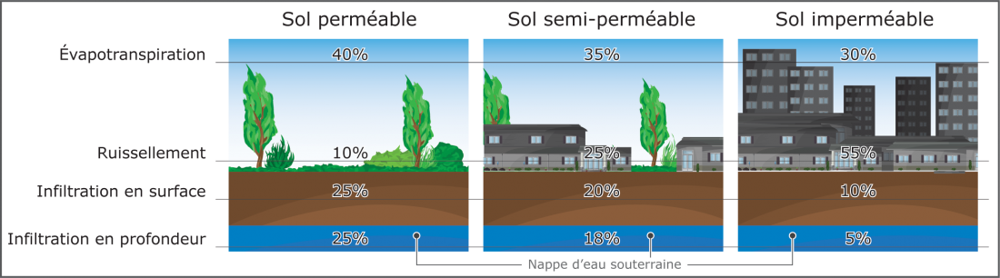
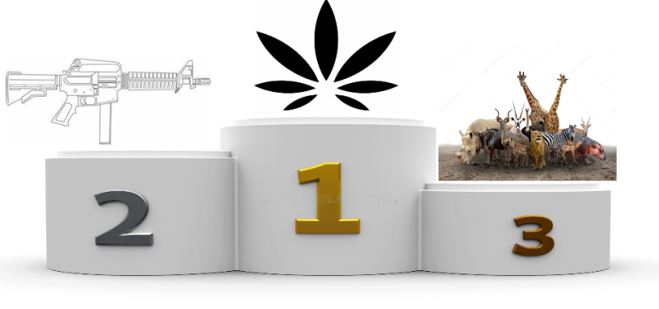

Depuis presque un siècle, les scientifiques constatent une évolution du climat. La planète a déjà subi des changements climatiques au cours de son histoire, ainsi, les périodes froides et chaudes se succèdent. L’histoire de la planète est donc marquée par de nombreuses périodes, correspondant chacune à des cycles "Réchauffement-Glaciation". La période actuelle correspond à une période de réchauffement qui se caractérise par un accroissement anormalement rapide de la température, avec comme hypothèse largement démontrée depuis, que cet accroissement rapide est dû aux activités humaines.
Les conséquences de telles activités s'enchaînent en cascade. En effet, en déréglant des propriétés de la planète, l'homme s’enferme dans une boucle de rétroaction positive. Comme c’est le cas de l’émission de CO2 auto corrélé avec l’augmentation de la température. L'évolution du climat d’origine humaine (ou non) perturbe les courants marins et aériens. Néanmoins les activités anthropiques accélèrent l'évolution, de ce fait, cette dernière a une conséquence plus importante encore sur la perturbation des courants. Les courants marins sont donc plus chauds, les glaciers fondent de ce fait l'albédo diminue. La terre absorbe donc plus d'énergie et la restitue, cela augmente la température qui réchauffe la mer et les océans. De plus, cela augmente le niveau de la mer et l’ensemble des risques qui en sont liés (érosion côtière et submersion). C’est une première boucle de rétroaction. Ensuite, la perturbation des courants atmosphériques amplifie les phénomènes extrêmes. Cela a des conséquences également sur la composition physique chimique de l’eau par exemple l'évolution du ph des océans. Cela a de nombreuses répercutions sur la biodiversité marine telle que les coraux. De plus, on sait que les coraux sont sensibles à une variation de ph, la plupart périsses. On sait également que les coraux ont un rôle important autour des îles pour les protéger des marées, des tempêtes mais aussi de l’érosion. On peut également dire un mot sur la biodiversité marine. Selon Maud Fontenoy dans son ouvrage bleu un océan de solutions, une baleine est importante dans l'écosystème de la terre. En effet une baleine adulte est capable d’absorber, par an, l'émission de CO2 annuelle de la ville de Lyon, elle joue donc le rôle de 15 000 arbres. Les activités humaines ont également des conséquences sur les continents, en effet l’usage intensif des sols est la première source de son érosion. Le sol est un élément vital pour les êtres vivants sur Terre. Néanmoins, il n’est pas protégé. Les principales causes de l’érosion sont le surpâturage à 60%, la déforestation à 20%, les feux de forêt à 5% mais aussi la destruction des sols par l’urbanisation ou encore les mauvaises pratiques agricoles. Selon l’ouvrage Gaia, si l’homme détruit plus de 70% d’un écosystème ce dernier ne peut plus fonctionner et est voué à la disparition. Il faut donc évoluer rapidement puisqu’en 2010, 65% des forêts ont été détruites sur le globe.
Premièrement, le forçage climatique est essentiellement dû aux activités anthropiques. Comme vu précédement l'évolution du climat a un impact sur la faune et la flore. De plus, selon les caractéristiques des activités, elles peuvent également impacter les milieux et les espèces. Par exemple, la transformation d'un espace naturel en champ de cultures affecte la biodiversité locale, fait disparaître l'ancien écosystème pour un nouveau, adpaté à des champs de cultures homogènes. Autre exemple : la construction de pavillions, de routes ou d'immeubles imperméabilise les sols et fait mourir l'ensemble de la vie sur cette surface et destabilise également les écosystémes...
Selon Wildlife Trade Specialists, le trafic animal est le commerce illégal d’animaux sauvages mais aussi domestiques. En effet, cela consiste à prélever de façon illégale l’animal pour l'expédier dans un pays où il est fortement demandé. Néanmoins, cela n’est pas toujours l’animal qui est convoité mais ses produits dérivés. Ce commerce est le troisième trafic illégal au monde, après le trafic de drogue et le trafic d'armes. Selon les estimations, cela rapporterait de 15 à 160 milliards d'euros par an. Cela représente plus de 5.000 euros de braconnage par seconde. Ce commerce consiste à emporter, capturer illégalement, braconner des animaux sauvages ou domestiques pour les revendre dans d'autres pays. Ce trafic est encouragé par des réseaux mafieux, qui alimentent le commerce illégal d'animaux sauvages et de leurs produits dérivés. Le braconnage est souvent à l'origine de l'extinction d’espèces et de la chute de la biodiversité locale et mondiale. C'est l’un des trois facteurs principaux avec la destruction des habitats naturels et le changement climatique.
Il existe des paradoxes dans les législations de chaque pays et à travers le monde. Cela ne facilite pas la lutte inter-étatique contre le braconnage et le trafic. Par exemple, la chasse peut être autorisée pour certaines espèces mais leurs ventes illégales. Cela favorise la chasse pour la survie des tribus autochtones mais surtout cela favorise le trafic illégal. Le prélèvement peut également être légal dans les lois du pays. Dans le cas de l' ivoire , son prélèvement et son commerce était légal jusqu'en 1989, désormais sa vente est interdite mais ce n’est pas le cas du prélèvement. Par exemple, le gouvernement du Botswana a décidé d'autoriser à nouveau les chasseurs à tuer les éléphants, selon le ministère de l'Environnement. Alors que l'éléphant fait partie des espèces protégées et en danger. De plus, les prélévements ne cessent d'augmenter.

Les Psychidae sont des lépidoptères appelés aussi papillon. Les chenilles se construisent un fourreau de soie et d'éléments prélevés dans l'environnement pour se faire des abris.
Pour en savoir plusAu cours de la décennie écoulée, la perte nette de forêts dans le monde a été de 4,7 millions d'hectares par an.
Pour plus d'informationcreated with
HTML Website Builder .